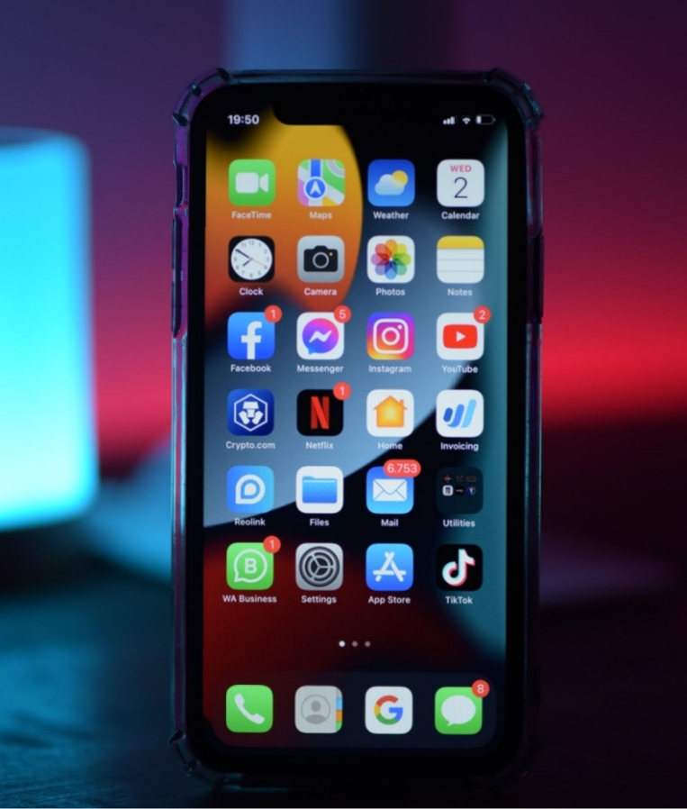
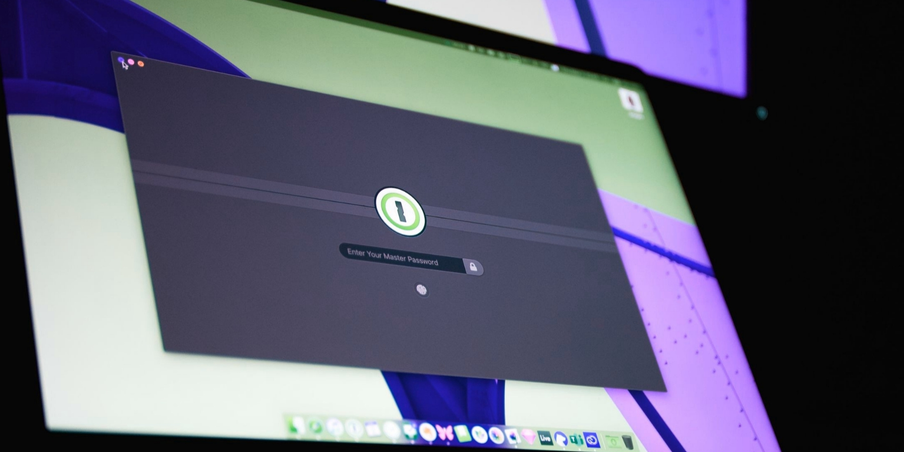

Så håller du dig säker som privatperson
I januari 2019 upptäcktes en samling av inloggningslistor innehållande kombinationer av e-postadresser och lösenord på ett populärt hackingforum,
773 miljoner e-postadresser tillsammans med lösenord fanns där.
När du får din identitet kapad, kan konsekvenserna bli dyra. Ett digitalt rån där man får tillgång till dina uppgifter och därmed
kan använda ditt namn för ekonomisk vinning.
Skräppost är något alla har i sin inkorg, men bedragarna har blivit duktigare på att ge dig som mottagre en reaktion i inehållet.
Kanske något som gör dig ledsen, intresserad eller stressad och att det är bråttom. Aktivera skräppostfilter, men kom ihåg att det kan ta bort andra e-postmeddelanden också.
När det kommer till nedladdningar av appar eller program bör du vara försiktig. Ansvänd dig helst bara av de inbyggda appbutikerna men om du laddar ner från
från en webbplats så läs recenssioner men framförallt ladda inte ner något på uppmaning av någon annan.
Det är lätt att det kommer pop-up fönster i din webbläsare som talar om att din enhet är virusinfekterad och att du bör vidta åtgärder.
Jag gjorde tyvärr detta misstaget för många år sedan på min gamla Mac, den gick inte att använda efter detta.
Säkerhetskopiera alla viktiga filer eller lägg in dem i molnet. Det finns virus som enbart är skapade för att förstra dina filer.
Wifi - Vad har du för router hemma?
Kanske har du router hemma som gör att du får Wifi? Kontrollera att din router inte har svag säkerhet och att du har ett bra och säkert lösenord.
Om någon skulle lyckas komma in på ditt nätverk så kan deras beteende på Internet skada dig, då det kommer se ut som att du skapat skadan
men de kan också angripa dina enheter och sprinoera på dig vad du gör på internet.
Byt namn och lösenord till din router. Ändra det trådlösa nätverkets krypteringsstandard till WPA2 eller WPA3. Om din router inte stödjer WPA2 eller WPA3 bör du köpa en ny router.
WEP är en krypteringsmetod som utvecklades när trådlöst internet blev stort och säkerheten är därför idag bristfällig då WPA är en bättre version av WEP och utvecklad därefter.
Detta ser du lätt genom att välja nätverksdetaljer för ditt Wifi i din enhet.
Routerns förinställda administationslösenord är egentligen bara tänkt för användning vid installation, det är verken unikt eller hemligt, vilket gör
det lätt för angripa.
Om det går, aktivera automatiska uppdateringar och stäng av ditt Wifi när du inte är hemma under en längre period.
Ta kontroll över din telefon!
- Jag rekomenderar dig att kolla igenom dina Privacy Inställningar på din telefon.
Här kan du se vad dina appar har för olika rättigheter men du kan också redigera detta som att stänga av rättigheter till att anända din mikrofon på exempelvis TikTok. På Privacy-inställningar finns också en funktion som heter spårning, om du stänger av detta så nekas alla förfrågningar ovan automatiskt. - Om du tillhör gruppen som använder dig av Iphone vill jag verkligen tipsa om att aktivera appen App Privacy Report.
Du kommer nu att få dagliga rapporter om hur ofta dina olika appar använder sig av din data, dvs din mikrofon, kamera m.m. Här ser du också vilka appar som gjort anrop utåt till en url, du kan även se vilken url. - Nästa tips är att gå in på Platstjänster och bläddra tills du kommer allra längst ner. Här finns något som heter "viktiga Platser" vilket visar alla platser som din telefon varit på och jag lovar dig att att du kommer få en chock över hur mycket din telefon vet om dig.
- Iknognito mode i din webbläsare är en inställning du kan sätta på i din webbläsare. Den gör att webbläsaren inte kommer ihåg din aktivitet och webbhistorik.
Hur ska man tänka när det kommer till lösenord?

Nu har vi tagit oss vidare till lösenord. Människan är bekväm och latoch vi vill ha det så smidigt som möjligt.
Vi skapar lösenord som är lätt att komma ihåg och vi använder gärna samma till allt. Tyvärr är internetbedragare medvetna om detta.
Här kommer några förslag på hur du kan tänka när det kommer till lösenord:
- Använd dig av ett långt lösenord, gärna med små och stora bokstäver och siffror. Använd inte att lösenord som du har personlig koppling till.
- Lösenordshanterare innebär att du har ett huvudlösenord för att komma åt alla dina lösenord beorende på vilken sida du är inne på. Detta gör att du kan ha många svårknäckta lösenord som du inte behöver komma ihåg.
- Ett annat sätt är att använda sig av är tvåstegsverifiering. Du skriver först in ditt lösenord, sen får du en kod skickad till exempelvis din telefon som du i nästa steg behöver ange vid inloggning. Om någon nu får tag på din telefon så kan de ändå inte komma åt ditt konto då de inte har tillgång till dina verifieringskoder.
- Om du använder dig av Gmail och misstänker att någon försökt ta sig in på ditt konto, logga in på en webbläsare, scrolla längst ner till högra hörnet, där finner du "Last Account Activity" och där går du till "Details". Här ser du om det hänt några säkerhetshändelser. Här kan du också dubbelkolla att tvåstegsverifiering är aktiverat.
- Sist men absolut inte minst, på denna sida kan du kolla ifall din epostadress har varit eller är i ett dataintrång.